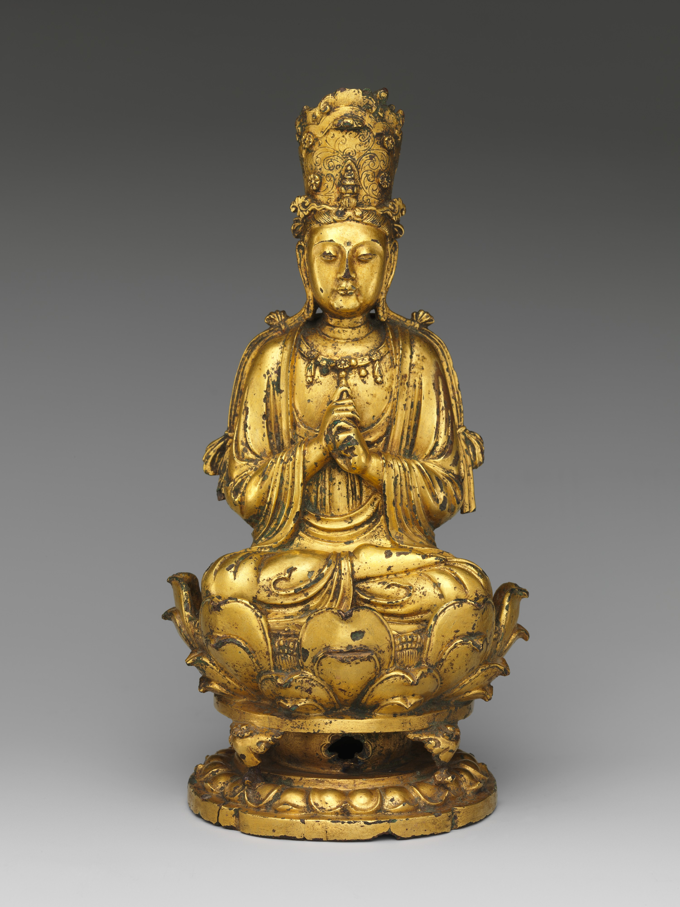

三彩釉陶载乐骆驼俑
唐三彩是唐代陶瓷艺术的最高成就之一，以黄、绿、白三色釉彩著称，实际上包含褐、蓝、黑等多种釉色。这件载乐骆驼俑高58.4厘米，驼背上载有八人乐舞组合，生动记录了丝绸之路上的胡汉文化交融。三彩器多为明器，但其雕塑水准和釉色表现力代表了中国古代陶塑的巅峰。
唐代陶瓷艺术以三彩为冠冕，金银器为筋骨，越窑青瓷为魂魄。三者共同构建了一个色彩丰沛、器型雄健、纹样包容万象的艺术世界。

唐三彩是唐代陶瓷艺术的最高成就之一，以黄、绿、白三色釉彩著称，实际上包含褐、蓝、黑等多种釉色。这件载乐骆驼俑高58.4厘米，驼背上载有八人乐舞组合，生动记录了丝绸之路上的胡汉文化交融。三彩器多为明器，但其雕塑水准和釉色表现力代表了中国古代陶塑的巅峰。

法门寺地宫出土的秘色瓷是唐代越窑最高等级的产品，釉色青碧如湖水映天，陆羽谓之"类玉""类冰"。八棱净瓶造型源自佛教法器，八面棱角刚柔相济，釉层在棱线处自然减薄形成微妙光影变化。这件器物的出土解决了学术界关于"秘色瓷"为何物的长期争议。

何家村窖藏出土的鎏金银壶，壶身錾刻舞马衔杯图样，造型仿皮囊壶，融合了北方游牧民族的器型传统与唐代金银器精工錾刻技艺。舞马是唐玄宗时期宫廷驯马表演的写照，每逢千秋节（玄宗生日），舞马随乐曲衔杯祝寿。此壶集历史、工艺、艺术于一身，是盛唐气象的缩影。